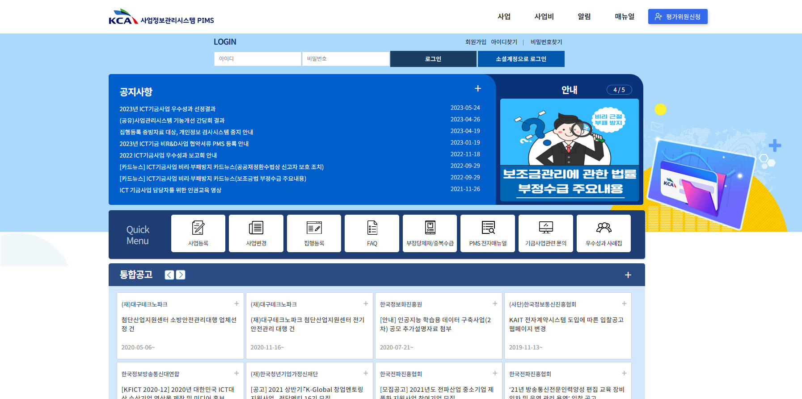
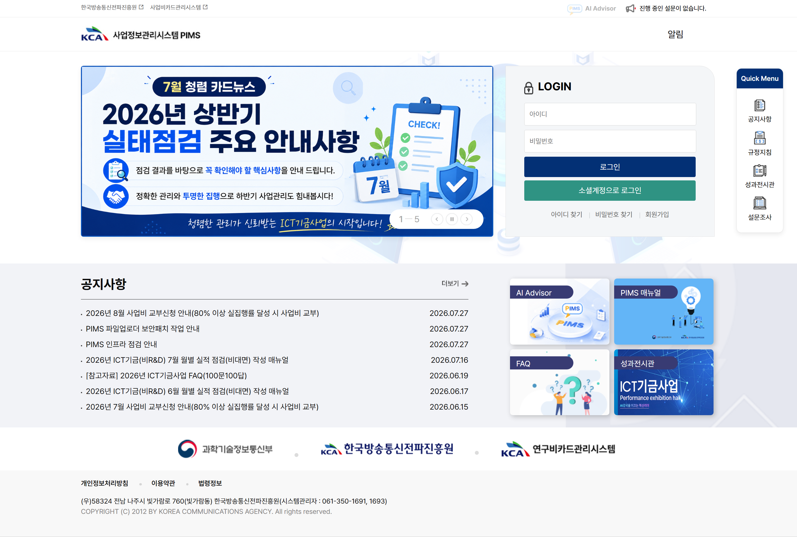
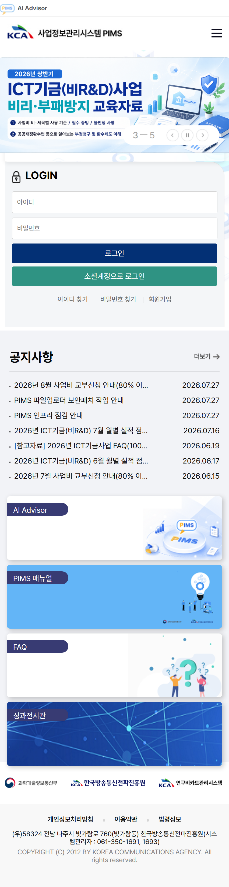

BEFORE
복잡하게 밀집된 고정형 UI
공지사항, 퀵메뉴, 공고 목록이 좁은 화면에 과도하게 밀집되어 있어 정보 탐색이 어렵고 시각적 피로도가 높은 기존 구조입니다.


대형 배너와 퀵메뉴를 일체형 대시보드로 통합하여 편의성을 높였습니다. 하단에는 AI Advisor, 매뉴얼 등 핵심 메뉴를 직관적인 카드로 구분하여 서비스 접근 경로를 단순화했습니다.
복잡한 2단 대시보드 요소들을 모바일 세로 레이아웃에 맞춰 자연스럽게 1열 카드로 재배치했습니다. 터치 친화적인 버튼과 가독성 높은 그래픽으로 이동 중에도 편리한 시스템 이용을 지원합니다.
사용자 편의성 및 데이터 접근성을 강화하기 위해 진행된 메인화면 리뉴얼 전·후 비교입니다.

공지사항, 퀵메뉴, 공고 목록이 좁은 화면에 과도하게 밀집되어 있어 정보 탐색이 어렵고 시각적 피로도가 높은 기존 구조입니다.
밝고 현대적인 톤앤매너로 개편하고, 핵심 메뉴를 시각적 카드로 전면 배치하여 사용자 편의성과 정보 탐색 효율성을 대폭 강화했습니다.